Sobre mim
Desenvolvedor backend em Java e estudante Analise e Desenvolvimento de Sistemas, estou em busca de uma oportunidade de estágio em desenvolvimento backend. Comprometido em criar aplicativos robustos e escaláveis, com experiência no desenvolvimento de sistemas web e APIs RESTful. Estou sempre buscando aprimorar minhas habilidades e aprender novas tecnologias para melhorar a qualidade e a eficiência do meu trabalho, Além disso, possuo habilidades sólidas em análise e resolução de problemas, trabalhando de forma colaborativa em equipe. Sou apaixonado por escrever código limpo e de fácil manutenção, seguindo as melhores práticas de desenvolvimento.
HardSkills
- Linguagens: Java
- Frameworks: Spring Boot, Spring MVC
- Bancos de Dados: MySQL, PostgreSQL
- Ferramentas de Build: Maven, Gradle
- Testes: JUnit, Mockito, TDD
- Controle de Versão: Git
- Estrutura de dados e API de Streams
- Conhecimentos adicionais: RESTful APIs, Microservices Architecture, Amazon Web Servicesﾠ ﾠﾠﾠﾠﾠﾠﾠﾠﾠ ﾠﾠ

- 